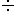

Otras expresiones
Finalmente trataremos un grupo de casos que requieren especial cuidado, por cuanto implican operaciones más avanzadas y algunos conceptos diferentes que se manejan en los enunciados de las situaciones problemáticas.
a) Números consecutivos son aquellos que se encuentran uno enseguida del otro
en su orden natural. Ejm:
- Son consecutivos ascendentes7, 8 y 9
- Son consecutivos descendentes 5, 4. 3 y 2
- Pares consecutivos 2, 4, 6 y 8
- Impares consecutivos 3. 5, 7, 9,...
b) Anterior a, antes de, inmediatamente anterior a: Tal como lo sugiere el término, simplemente se refiere a un número que se encuentra antes del número dado. Ejemplo:
- El número que está antes de 4 es 3
- El número inmediatamente anterior a 98 es 97
- El número anterior a 14 es 13 El impar anterior a 11 es
c) El siguiente de, inmediatamente después de, después de: En este caso se hace referencia a una cantidad que le sigue a otra, es decir, lo contrario del punto anterior Ejemplo:
- El número que está después de 14 es 15
- El número que está inmediatamente después de 23 es 24
- El par siguiente de14es16
d)El cuadrado de Significa elevar a la segunda potencia Así
- El cuadrado de 4 será 16, porque 42 = 16
- 6 al cuadrado será 36, porque = 36
- 12 elevado a la segunda potencia será 144, porque 122 = 144
e) El cubo de: Se debe elevar el número a la tercera potencia. Ejemplo:
- El cubo de 3 será 27, porque 33 = 27
- 2 al cubo será 8, porque 23 = 8
- 4 elevado a la tercera potencia es 64 porque 43 = 64
f) Es: este conector es sinónimo de igual a, equivalente a, etc Ejemplo-
- La suma de 2 y otro número es 8, matemáticamente seria 2 + = 8
- La diferencia entre 2 números m y n es 16 correspondería a m - n = 16
- El cuadrado de un número X es 144 sería X2 = 144
g) Representación de un número: Para representar cualquier cantidad numérica en una expresión algebráica se usan las letras del alfabeto, es decir que una letra en una expresión, representa cualquier número real. En las ecuaciones las letras representan la(s) cantidad(es) desconcida(s), razón por la cual se les suele llamar INCÓGNITAS o VARIABLES. Su uso más frecuente lo encontramos al asignarse como la variable de una expresión algebráica que representa una situación problemática.. Veamos:
- Un número aumentado en 5 se representaría como... X + 5
- M - 12 representaría el enunciado...Un número disminuido en 12
- El producto de un número y 4 sería.....F x 4
- 45  T correspondería a la expresión ...El cociente entre 455 y un número
Nota: Términos como dividido entre, raíz n de, sumado con, multiplicado con, elevado a la potencia n: simplemente implican hacer la operación indicada. Recuerda siempre que las divisiones y cocientes las puedes escribir como fracciones.
EVALÚO MIS AVANCES
Lee y completa los enunciados con la expresión correspondientes